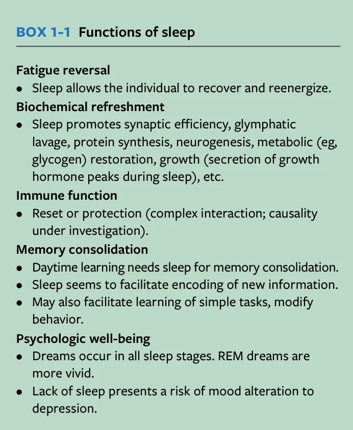
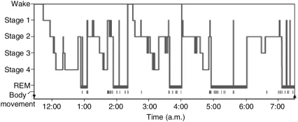
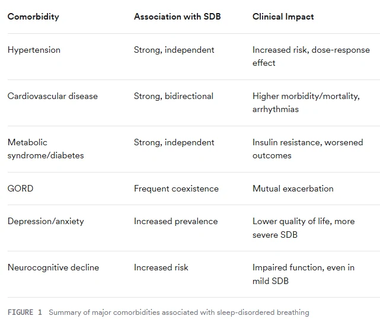
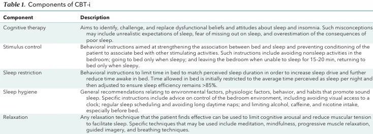
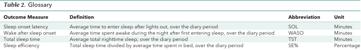
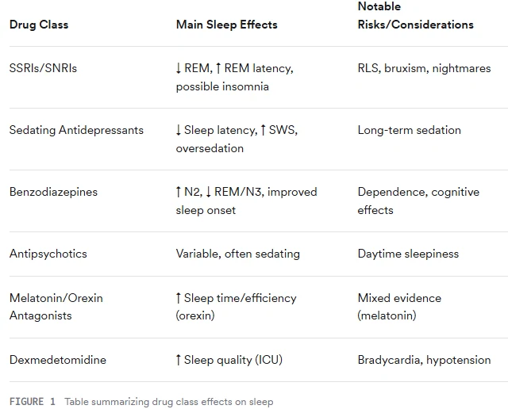

Normal sleep supports cognition, mood, immune regulation and metabolic homeostasis. When a patient reports fatigue, determine whether the problem is insufficient sleep, fragmented sleep, insomnia, or respiratory events rather than assuming OSA.
COMPLETE TEACHING LESSON · 247 WORDS
Sleep is not passive rest. It is an actively generated, reversible behavioural state with distinct restorative functions, and the examinable point is that each function maps onto a recognisable clinical consequence when sleep is lost.
Function of sleep
Mechanism
Consequence when disrupted
Physical restoration and repair
Protein synthesis, cell and tissue repair, anabolic dominance
Impaired recovery, injury susceptibility
Biochemical refreshment
Restoration of synaptic and neuronal function; glial-mediated glymphatic clearance of meta-bolites; glycogen restoration; neurogenesis
Cognitive slowing; accumulation of neurotoxic metabolites implicated in neurodegeneration
Memory consolidation
Declarative memory in NREM (sleep spindles); procedural and emotional memory in REM
Impaired learning, poor academic and occupational performance
Emotional regulation
REM-dependent processing of affective experi-ence; limbic reactivation
Irritability, mood lability, amplification of depression and anxiety
Hormone regulation
Growth hormone pulse in early slow-wave sleep; prolactin, testosterone, parathyroid hor-mone; thyroid hormone in late evening; melatonin under light–dark control
Growth failure in children; metabolic dysregulation; reduced libido
Increased appetite, insulin resistance, weight gain

Figure 1.1 — Functions of sleep. Fatigue reversal, biochemical refreshment (synaptic efficiency, glymphatic lavage, protein synthesis, neurogenesis, growth hormone peak), immune function, memory consolidation and psychological well-being.
Why it is examinable: a favourite opening viva question is simply "why do we sleep?". A structured five-heading answer with onemechanism each scores far better than a list of adjectives.
From the supplied IFDSM Examination Revision Companion, source pp. 8–9. This full content is embedded in the HTML page, not loaded from a PDF or external script.
After reading · linked single best answers
8 SBA questions for §1.1
Read the teaching explanation above first. Each number opens the question and returns here from its explanation.
NREM and REM are distinct physiological states. REM-related muscle atonia can aggravate upper-airway obstruction; a study that captures little REM may not represent the full clinical burden.
COMPLETE TEACHING LESSON · 1,016 WORDS
DEFINITION TO KNOW VERBATIM
Sleep is a reversible behavioural state characterised by decreased responsiveness to arousing stimuli and disengagement from environmental surroundings. It is a complex physiological and behavioural process orchestrated by distinct neuronal networks, and is qualitatively distinct from rest. Human sleep physiology is assessed by polysomnographic recording of brain waves, eye movements and muscle tone.
Two-process regulation
Process S — homeostatic sleep drive. Sleep pressure accumulates with time awake (adenosine accumulation is the principal candidate mediator) and dissipates during sleep.
Process C — circadian rhythm. An endogenous ~24-hour oscillator in the suprachiasmatic nucleus of the hypo‐ thalamus, entrained principally by light via the retinohypothalamic tract, promoting wake during the day and sleep at night. Melatonin, secreted by the pineal gland, induces sleepiness partly by opposing the SCN alerting signal and is suppressed by light — the mechanistic basis for the effect of evening screen use.
The interaction of the two explains clinical phenomena examiners like: why a night-shift worker is sleepy at 04:00 despite adequate prior sleep (circadian trough), and why an adolescent with a delayed circadian phase cannot fall asleep at 22:00 no matter how tired (Topic 8).
NREM-promoting: GABA and galanin from the ventrolateral preoptic area; overall reduction in neuronal firing.
REM generation: cholinergic ("REM-on") neurons of the pedunculopontine and laterodorsal tegmentum become active while monoaminergic ("REM-off") serotonergic, noradrenergic and orexinergic activity falls to its nadir. This reciprocal switch explains why REM-suppressing drugs are typically serotonergic or noradrenergic (1.12), and why loss of orexin neurons produces narcolepsy with intrusion of REM phenomena into wakefulness (1.11).
Sleep architecture and cycling
Sleep alternates cyclically between NREM and REM. A normal episode begins in NREM and progresses through deepening stages before the first REM period.
Stage
% of total sleep
Duration (first cycle)
EEG and clinical features
N1
2–5%
1–7 min
Transition from wakefulness; alpha (8–13 Hz) replaced by low-voltage mixed-frequency activity; vertex sharp waves; easily interrupted by noise. Transitional role in cycling
N2
45–55%
10–25 min, lengthen-ing each cycle
Low-voltage mixed frequency with sleep spindles (11–16 Hz) and K-complexes. Spindle density rises after learning a new task — the electrophysiological correlate of memory consolidation. Requires a more intense stimulus to wake than N1
N3 (old stages 3 + 4)
~13–23%
20–40 min
Slow-wave sleep: high-voltage (>75 µV) slow (0.5–2 Hz) delta activity in ≥20% of the epoch. Highest arousal threshold of all NREM stages. Concentrated in the first third of the night; the growth hormone pulse occurs here. Disorders of arousal (sleepwalking, sleep terrors) arise from N3
REM
20–25%
1–5 min, progressively prolonged
Desynchronised low-voltage mixed-frequency EEG, saw-tooth waves, theta (3–7 Hz), bursts of rapid eye movements, and skeletal muscle atonia which prevents dream enactment. ~80% report vivid dreaming on arousal from REM. Longest in the final third of the night

Figure 1.2 — Hypnogram of a normal adult night. Note the two features examiners look for: slow-wave sleep (stages 3–4) is concen‐ trated in the first third of the night and largely disappears later, while REM periods lengthen progressively and dominate the final third.
Why it is examinable: this pattern underpins several downstream facts — why REM-predominant OSA is worst in the early hours, why asplit-night study can under-sample REM, and why a successfully treated patient shows REM rebound with an increase in REM percent‐age rather than an increase in total sleep time.
Physiological changes during sleep
These changes are well tolerated by healthy individuals but may destabilise a patient whose cardiovascular or respiratory reserve is already marginal — the reason OSA is dangerous in the comorbid patient rather than merely in‐ convenient.
System
NREM
REM
Brain activity
Decreases from wakefulness
Increases in motor and sensory areas; other regions similar to NREM
Heart rate
Slows
Increases and becomes variable
Blood pressure
Falls (physiological nocturnal "dip")
Rises, by up to ~30%, and fluctuates
Sympathetic nerve activ-ity
Decreases as NREM deepens, but bursts occur with K-complexes, arous-als and large body movements
Increases markedly above waking levels
Muscle tone
Similar to wakefulness
Absent (atonia) — including the pharyngeal dilators
Respiration
Slower, deeper, very regular; minute ventilation falls; chemosensitivity to hypoxia and hypercapnia is blunted
Irregular, faster, less predictable; brief central pauses may occur; cough is suppressed
Upper airway resistance
Increases from wakefulness
Increases further and varies
Cerebral blood flow
Significant reduction in flow and meta-bolism
Total flow comparable to wakefulness; regionally in-creased in limbic and visual association areas
Thermoregulation
Regulated at a lower set point; shiver-ing threshold lowered
Not regulated — no shivering or sweating; temperat-ure drifts toward ambient
Renal
Reduced excretion of sodium, potassium, chloride and calcium; concentrated urine and reduced flow — hence nocturia is abnormal and a useful OSA symptom
Endocrine
Growth hormone in early SWS; thyroid hormone in the late evening; melatonin under light–dark control
HIGH-YIELD
The sharp rise in heart rate and blood pressure on morning awakening explains the morning peak in myocardial in‐farction. In OSA this surge is repeated dozens of times a night.
REM atonia applies to the pharyngeal dilators too. This is why REM-predominant OSA exists and why it responds relatively poorly to mandibular advancement (Topic 7).
Thermoregulation is suspended in REM. A memorable single fact that is easy to ask and easy to mark.
EXAM TRAP — NOMENCL AT U R E
Older texts (Rechtschaffen & Kales) describe four NREM stages. Since the AASM 2007 scoring manual, stages 3 and 4 have been merged into a single stage N3, and stage nomenclature is N1/N2/N3/R. Your source notes use the four-stage terminology. Both are acceptable if you signal that you know the modern convention: say "slow-wave sleep, stage N3, previously stages 3 and 4". Using the old scheme without acknowledgement can read as out-of-date reading.
From the supplied IFDSM Examination Revision Companion, source pp. 9–12. This full content is embedded in the HTML page, not loaded from a PDF or external script.
After reading · linked single best answers
14 SBA questions for §1.2
Read the teaching explanation above first. Each number opens the question and returns here from its explanation.
Separate anatomy (airway size and collapsibility/Pcrit) from non-anatomical traits (loop gain, arousal threshold, dilator-muscle responsiveness). A mandibular advancement device mainly addresses the anatomical component, not every ventilatory-control abnormality.
COMPLETE TEACHING LESSON · 915 WORDS
DEFINITIONS TO KNOW VERBATIM
Sleep-disordered breathing (SDB)— a group of disorders characterised by abnormalities of breathing, respiratory pattern or quantity of ventilation during sleep. It spans a wide spectrum: increased upper airway airflow resistance, heavy snoring, marked reduction in airflow (hypopnoea) and complete cessation of breathing (apnoea).
Obstructive sleep apnoea (OSA)— a form of SDB involving snoring but caused by more significant upper airway obstruction, with consequent sleep fragmentation, hypoxaemia, or both.
OSA versus OSA syndrome— where objective polysomnographic evidence exists without symptoms, the correct term is OSA alone; when accompanied by symptoms it is OSA syndrome. Examiners do ask for this distinction.
The core mechanism
During wakefulness, tonic neural activation of the pharyngeal dilator muscles (principally genioglossus) maintains air‐ way patency against the negative intraluminal pressure of inspiration. With sleep onset this compensatory tonic input is withdrawn. Some degree of airway narrowing during sleep is therefore a normal physiological event. In the patient with OSA the normal response is exaggerated by the combination of abnormal anatomy and abnormal physiology, so that narrowing becomes repetitive collapse. Obstruction may occur anywhere between the nasopharynx and larynx; the commonest sites are retropalatal(behind the soft palate) and retroglossal(behind the tongue base).
Mechanically the pharynx behaves as a collapsible tube — a Starling resistor. Its collapsibility is quantified by the critical closing pressure (Pcrit): the minimum airway pressure required to prevent complete collapse. A healthy airway
has a negative P crit; the OSA airway is shifted towards positive values, and the more positive the value, the more
collapsible the airway.
Anatomical factors
Category
Contributors
Craniofacial skeletal
Retrognathia and micrognathia; maxillary constriction with a high-arched or narrow palate; steep mandibular plane angle; excessive vertical facial growth; inferiorly positioned hyoid bone; reduced maxillary and mandibular length
Soft tissue volume
Macroglossia and increased tongue volume; elongated soft palate and enlarged uvula; adeno-tonsillar hypertrophy (dominant in children); parapharyngeal fat pads; large mandibular tori reducing oral volume; lateral pharyngeal wall thickening
Nasal
Septal deviation, turbinate hypertrophy, polyps, allergic rhinitis — increasing resistance, promoting mouth breathing and reducing tolerance of nasal PAP
Obesity
Peripharyngeal fat deposition mechanically loads the airway and offsets dilator activity, an effect most marked in sleep when neuromuscular activity falls. Obesity also reduces function-al residual capacity and chest wall compliance, which reduces caudal tracheal traction on the pharynx and further increases collapsibility; it disturbs the relationship between respiratory drive and load compensation
Other
Rostral fluid shift to the neck on recumbency; pharyngeal sensory neuropathy from chronic vibration; reduced lung volumes in neuromuscular disease
Non-anatomical factors — the PALM construct
Approximately all patients with OSA have some degree of anatomical impairment, but the magnitude varies widely, and around 70% have impairment of one or more non-anatomical traits. Four traits are conventionally described, summarised by the mnemonic PALM.
PALM
Trait
Mechanism and consequence
Targeted intervention
P
Pcrit — passive anatomy/col-lapsibility
The anatomical substrate. Mild <−2, moderate −2 to +2, severe >+2 cmH2O. Distribution in OSA: ~19% mild, ~58% moderate, ~23% severe
The patient wakes prematurely in response to a respiratory disturbance — before the dilator muscles have had time to recruit — producing sleep fragmentation and ventilatory instability. Paradoxically a low threshold can also limit apnoea duration
Hypnotic agents (e.g. es-zopiclone) to raise the threshold
L
Loop gain (high in ~36%)
An oversensitive ventilatory control loop: ex-cessive ventilatory response to CO2 causes overshoot, subsequent hypocapnic under-shoot and unstable periodic breathing, pro-moting both obstructive and central events
Acetazolamide, supple-mental oxygen
M
Muscle responsiveness (poor in ~36%)
Failure of the dilators to recruit in response to negative pressure sensed at the pharynx and epiglottis
Clinically the traits combine. Of patients with moderate anatomical impairment — the largest group — about 64% have at least one significant non-anatomical impairment and are candidates for combined anatomical and non- anatomical therapy, while about 36% have no major non-anatomical impairment and can be managed with anatomical intervention alone. Patients with severe anatomical impairment require major anatomical intervention regardless.
HIGH-YIELD — WHYTHISFRAMEWORKM AT TERS TO ADENTIST
An oral appliance is an anatomical intervention. It reduces pharyngeal collapsibility in a dose-dependent manner without systematically altering genioglossus function, loop gain or arousal threshold. It therefore follows that:
Patients whose disease is predominantly anatomical and mild-to-moderate in collapsibility respond best.
A patient with a highly collapsible airway plus unstable ventilatory control is a predictable non-responder — and no amount of further protrusion will fix a loop-gain problem.
This is the mechanistic justification for combination therapy, and it is the most sophisticated answer available to the question "why does oral appliance therapy fail in a third of patients?"
Estimating phenotype without a research laboratory. Two practical surrogates have been described. A CPAP dial-down manoeuvre during a titration night (CPAP briefly withdrawn for five breaths, repeated five to ten times) allows calculation of peak inspiratory flow as a percentage of the CPAP-supported baseline; a value ≥30% indicates a only mildly collapsible airway and correlates with a more negative P crit. The awake upper airway collapsibility index uses
choanal and epiglottic pressure catheters during negative-pressure inspiration, takes about ten minutes, and correlates with sleeping P crit. Both are comparable to the gold-standard P crit measurement, and clinical/polysomnographic
prediction models are emerging.
From the supplied IFDSM Examination Revision Companion, source pp. 12–14. This full content is embedded in the HTML page, not loaded from a PDF or external script.
After reading · linked single best answers
16 SBA questions for §1.3
Read the teaching explanation above first. Each number opens the question and returns here from its explanation.
OSA is associated with hypertension, cardiovascular and metabolic disease, but the magnitude of association and effect of treatment depend on the studied population. Do not imply that an appliance has proved prevention of a specific event for an individual.
COMPLETE TEACHING LESSON · 261 WORDS
Population and definition
Women
Men
Source
AHI > 5, aged 30–60
9%
24%
Wisconsin Sleep Cohort, 1993
AHI > 5 plus excessive sleepiness (i.e. OSA syndrome)
2%
4%
AHI > 15 (moderate–severe)
4%
9%
Moderate–severe, aged 30–70, USA 2007–2010
6%
13%
Peppard et al. 2013
Any OSA, US adults
~17%; up to ~38% in some adult estimates
Varies with definition
Global, aged 30–69, AHI ≥5
936 million (mild–severe); 425 million moderate–severe
Benjafield et al. 2019
The wide variation between studies is itself examinable: prevalence depends on the hypopnoea definition used (3% versus 4% desaturation), the AHI threshold, whether symptoms are required, and the age and obesity profile of the population. If asked "how common is OSA?", the correct answer names a figure and its definition.

Figure 1.3 — Major comorbidities of sleep-disordered breathing, with the strength and direction of association and the clinical impact of each: hypertension (strong, independent, dose-response), cardiovascular disease (strong, bidirectional), metabolic syndrome and diabetes (strong, independent), GORD (frequent coexistence, mutual exacerbation), depression and anxiety (increased prevalence), and neurocognitive decline.
Why it is examinable: note the column headed "association" — examiners reward candidates who distinguish independent from bidirec‐tional associations, and who identify hypertension as the one with a genuine dose–response relationship.
Predictive comorbidities— the conditions whose presence should raise suspicion of OSA in a dental patient — are obesity, hypertension, cardiovascular disease (particularly ischaemic heart disease), and type 2 diabetes. Long-term sequelae include neurocognitive impairment, metabolic syndrome, systemic hypertension and cardiovascular disease.
From the supplied IFDSM Examination Revision Companion, source pp. 14–15. This full content is embedded in the HTML page, not loaded from a PDF or external script.
After reading · linked single best answers
8 SBA questions for §1.4
Read the teaching explanation above first. Each number opens the question and returns here from its explanation.
Obesity, age, sex, craniofacial restriction and medications modify pre-test probability; patients without obesity and women presenting with fatigue or insomnia can still have clinically important OSA.
COMPLETE TEACHING LESSON · 308 WORDS
Obesity — the single most important, and reversible, risk factor
The relationship is bidirectional, which is the point examiners probe. Obesity increases OSA severity by the anatomical and mechanical routes described in 1.3. Conversely, sleep fragmentation lowers leptin and raises ghrelin, increasing hunger and appetite — particularly for calorie-dense carbohydrate — while daytime sleepiness reduces physical activity. A self-perpetuating cycle results: disrupted sleep → increased appetite and reduced activity → weight gain → worse OSA → more disrupted sleep. Quantitatively, a 10% weight gain predicts a ~32% increase in AHI, and a 10% weight loss a ~26% decrease.
Age
Prevalence rises with age, with a peak in the sixties, and may plateau or decline in very advanced age.
In children the dominant risk factor shifts with age: adenotonsillar hypertrophy predominates in younger children (peak 2–8 years, when tonsillar tissue is proportionally largest), while overweight becomes the major factor in ad‐ olescence.
Gender
SDB is substantially more prevalent in men — roughly a 2:1 to 3:1 ratio at any given threshold.
The gender gap narrows with advancing age and after the menopause, implicating sex hormones. Loss of the protective effect of oestrogen, together with post-menopausal weight gain and central fat redistribution, increases both SDB and cardiovascular risk in women.
Women more often present atypically — insomnia, fatigue, mood disturbance rather than classic witnessed apnoea — and are therefore under-diagnosed. This is a good point to raise in a viva about screening.
Other risk factors
Anatomical: narrowed airway, craniofacial abnormality, large neck circumference
Alcohol, sedatives, hypnotics and opioids — reduced dilator tone and blunted arousal
Large tongue
Nasal congestion, rhinitis, sinusitis
Family history of SDB (genetic predisposition to craniofacial and body-fat distribution phenotypes)
Smoking — chronic upper airway inflammation and oedema
Supine sleep posture
From the supplied IFDSM Examination Revision Companion, source pp. 15–16. This full content is embedded in the HTML page, not loaded from a PDF or external script.
After reading · linked single best answers
9 SBA questions for §1.5
Read the teaching explanation above first. Each number opens the question and returns here from its explanation.
Witnessed apnoeas, choking, habitual snoring and sleepiness raise suspicion. No combination of symptoms, ESS or STOP-BANG alone confirms OSA; use a medical diagnostic pathway.
COMPLETE TEACHING LESSON · 186 WORDS
Nocturnal
Daytime
• • • • • • • • • Snoring (loud, habitual, socially disruptive) Witnessed apnoeas Waking with choking or gasping Restless, unrefreshing sleep Frequent arousals; insomnia Nocturia Night sweats Vivid dreams Salivation and tooth grinding
• • • • • • • • • Excessive daytime sleepiness Tiredness and fatigue Impaired concentration and cognition Morning headache Mood change, irritability, low mood Dry mouth on waking Reduced libido, impotence Nasal congestion Restless legs
OSA may be entirely asymptomatic. Sympathetic nerve activity and arterial pressure are commonly elevated in people with OSA even in the absence of symptoms — the basis for treating asymptomatic severe disease.
HIGH-YIELD — THE THREEREASONSANADU LT AT TENDSASLEEPCLINIC
Their own daytime symptoms— unrefreshing sleep, tiredness and fatigue, poor concentration and focus, low mood, or excessive daytime sleepiness.
Suspicion of OSA and concern about consequences— often prompted by apnoeas witnessed by a partner; concerns range from immediate (driving and workplace safety) to long-term (cardiovascular disease, stroke, cognitive decline).
The effect on their bed partner— socially disruptive snoring with or without witnessed apnoeic episodes is a very common trigger symptom.
Children present differently and this contrast is frequently examined: inattention, irritability, behavioural and learningproblems rather than sleepiness (Topic 8).
From the supplied IFDSM Examination Revision Companion, source pp. 16–16. This full content is embedded in the HTML page, not loaded from a PDF or external script.
After reading · linked single best answers
3 SBA questions for §1.6
Read the teaching explanation above first. Each number opens the question and returns here from its explanation.
Assess safety-critical consequences first: unintentional dozing while driving, near misses, occupational risk, and severe daytime impairment warrant prompt medical assessment and appropriate safety advice.
COMPLETE TEACHING LESSON · 288 WORDS
Impaired alertness and excessive daytime sleepiness
Type 2 diabetes and glucose intolerance; metabolic syndrome
Hypertension, including treatment-resistant hypertension
Atrial fibrillation that is difficult to control (and recurs after ablation)
Social disharmony and relationship difficulty from snoring; snoring also has an independent adverse effect on the carotid arteries
Increased mortality and premature death
Sleep, pain and temporomandibular disorder — the dentally relevant impact
Experimentally reducing total sleep time and selectively disrupting slow-wave and REM sleep evokes musculoskeletal pain, lowers pain thresholds, increases pain sensitivity, and reduces the antinociceptive potency of morphine. This is the mechanistic backdrop to the observed association between OSA and TMD.
In a population-based cohort free of TMD at baseline, OSA signs and symptoms were associated with an increased incidence of first-onset TMD. Men and women with two or more signs or symptoms of OSA had a 73% greaterincidence of first-onset TMD, independently of age, gender, race/ethnicity, obesity, smoking history and autonomic parameters. OSA symptoms preceded first-onset TMD.
In the parallel case-control analysis, chronic TMD was more than three times as frequent among adults with a low relative to a high likelihood of OSA, independently of the same factors.
Three mechanisms are proposed: (i) central sensitisation and pain amplification with impaired pain-inhibitory function — experimental inspiratory resistance reduces baroreceptor reflex sensitivity, and impaired baroreflex sensitivity is implicated in TMD; (ii) increased sympathetic activation, with individuals genetically predisposed to catecholamine sensitivity at higher risk of first-onset TMD; and (iii) sleep bruxism, which is more common in people with OSA, as a possible contributor to TMD development.
From the supplied IFDSM Examination Revision Companion, source pp. 16–17. This full content is embedded in the HTML page, not loaded from a PDF or external script.
After reading · linked single best answers
3 SBA questions for §1.7
Read the teaching explanation above first. Each number opens the question and returns here from its explanation.
The societal consequences of untreated sleep disorders include reduced alertness, transport and workplace accidents, productivity loss and bed-partner disturbance; the patient’s occupation changes urgency.
COMPLETE TEACHING LESSON · 166 WORDS
Domain
Impact
Public safety
Sleepy drivers have impaired reflexes and judgement; driver sleepiness contributes to a signific-ant proportion of serious and fatal crashes. Workplace accidents increase through slowed reaction time and impaired cognition, endangering workers and the public. This is why suspected OSA in a commercial driver or other safety-critical worker, or reported sleepiness while driving, requires urgent assessment and explicit advice about driving risk
Economic
Reduced productivity and lost work hours; disproportionately affects the middle-aged workforce, so more sick leave and more work disability; greater consumption of healthcare resources through consultations, prescriptions and hospital services
Health system
Direct and indirect costs of untreated disease place a substantial burden on health systems; OSA is a public health issue, not only an individual one
Mental health and social function
Worsening of depression and anxiety; social withdrawal and reduced desire for social interaction, contributing to loneliness
Physical health at popu-lation level
Higher risk of chronic illness, compromised immune function and increased infection susceptibil-ity
From the supplied IFDSM Examination Revision Companion, source pp. 17–17. This full content is embedded in the HTML page, not loaded from a PDF or external script.
After reading · linked single best answers
2 SBA questions for §1.8
Read the teaching explanation above first. Each number opens the question and returns here from its explanation.
Chronic insomnia requires persistent sleep difficulty with adequate opportunity and daytime impairment, usually at least three nights weekly for three months. CBT-I is first-line; persistent insomnia needs its own assessment alongside OSA.
COMPLETE TEACHING LESSON · 875 WORDS
DEFINITION TO KNOW VERBATIM
Insomnia is a subjective perception of difficulty with sleep initiation, duration, consolidation or quality that occurs despiteadequate opportunity for sleep, and that results in some form of daytime impairment.
Both elements are essential to the diagnosis: nocturnal symptomatology and daytime dysfunction. A patient who sleeps five hours, feels well and functions normally is a short sleeper, not an insomniac.
Classification and duration criteria
Chronic insomnia disorder— sleep-onset and/or sleep-maintenance complaints with associated daytime impairment, exceeding minimal frequency and duration thresholds shown to be associated with clinically significant morbidity. Under ICSD-3/ICSD-3-TR this means symptoms at least three nights per week for at least threemonths.
Short-term insomnia disorder— sleep–wake difficulties with clinically significant sleep dissatisfaction or waking impairment that fail to meet the frequency and duration criteria of chronic insomnia disorder.
Other insomnia disorder— rare cases that do not meet criteria for short-term insomnia disorder yet have sufficient symptoms to warrant clinical attention.
EXAM TRAP — THE D U R AT IONTHRESHOLD
Older material (and some revision notes) state that chronic insomnia requires symptoms "for at least a month", with acute or transient insomnia lasting days to weeks. That was the ICSD-2/DSM-IV framing. ICSD-3 and ICSD-3-TR require ≥3nights per week for ≥3 months, and DSM-5 aligns with this. Quote the three-month figure.
Prevalence
Insomnia symptoms: 33–50% of the adult population; about one third report dissatisfaction with sleep.
Insomnia symptoms plus distress or impairment (insomnia disorder): 10–15%.
Meeting diagnostic criteria for chronic insomnia: 5–15%.
In patients with medical and psychiatric comorbidity, prevalence rises to 50–75%.
The unifying concept is physiological, cognitive and cortical hyperarousal present during both sleep and wakeful‐ ness, with heightened activity of the sympathetic nervous system and the hypothalamic–pituitary–adrenal axis thought to perpetuate sleep–wake dysfunction. Objective correlates include:
Increased heart rate and altered heart rate variability
Increased body temperature
Increased whole-body metabolic rate
Increased high-frequency (beta and gamma) EEG activity during NREM sleep
Elevated cortisol, ACTH and corticotropin-releasing factor, particularly near sleep onset
Increased cerebral glucose metabolism on PET
No discrete structural brain pathology is identifiable, except where insomnia is comorbid with a neurological disorder such as stroke, brain trauma or multiple sclerosis. Genetics, environment, behavioural patterns and psychological stress all contribute to development and perpetuation.
Clinical features
Adults typically report difficulty initiating or maintaining sleep, early-morning awakening, and non-restorative sleep. In children, the caregiver reports bedtime resistance, frequent night awakenings and inability to sleep independently. At least one of the following forms of related daytime impairment must be present:
Fatigue or malaise
Reduced motivation, energy or initiative
Attention, concentration or memory impairment
Proneness for errors or accidents at work or while driving
Social or vocational dysfunction, or poor school performance
Tension, headaches or gastrointestinal symptoms in response to sleep loss
Mood disturbance or irritability
Concerns or worries about sleep
Daytime sleepiness
Insomnia often accompanies comorbid medical illness (hypertension, type 2 diabetes), mental disorders (anxiety, depression), other sleep disorders, substance use and exposure (alcohol, medication), and pain. It is associated with increased risk of motor vehicle and worksite accidents and of incident psychiatric and cardiovascular disorders. Insom‐nia is best viewed as a comorbid disorder that warrants separate treatment attention rather than a symptom that will resolve when the "primary" condition is treated.
Treatment
Cognitive behavioural therapy for insomnia (CBT-I) is recommended as first-line treatment, without the risk of tolerance or the adverse effects of pharmacological approaches. Its five components are more effective in combination than alone.

Figure 1.4 — The components of CBT-I: cognitive therapy (identifying and challenging dysfunctional beliefs and attitudes about sleep and about the consequences of poor sleep), stimulus control (re-associating bed and bedroom with sleep, and re-establishing a consistent sleep–wake schedule), sleep restriction (limiting time in bed to match perceived sleep duration to increase sleep drive, then extending it as sleep efficiency improves), sleep hygiene, and relaxation training.
Why it is examinable: candidates who can name all five components — and identify sleep restriction and stimulus control as the two withthe strongest evidence — clearly distinguish themselves from those who answer only "sleep hygiene".

Figure 1.5 — The four sleep-continuity outcome measures used to judge response in insomnia: sleep onset latency (SOL), wake after sleep onset (WASO), total sleep time (TST) and sleep efficiency (SE).
Why it is examinable: CBT-I produces a marked and durable effect onSOL, WASO and sleep efficiency, but only a small improvementintotal sleep timewhich augments over time. Sleep-diary measures of these variables are the most consistently used outcome inchronic insomnia because of ease of assessment. Being able to say which variable improves, and by how much, is a high-scoring detail.
Pharmacological options are second line. Hypnotics — benzodiazepines and benzodiazepine receptor agonists ("Z- drugs") — remain the most commonly used treatment despite this. Second-generation antipsychotics such as quetiapine are increasingly used, driven by dissatisfaction with available treatments rather than by evidence of superiority.
From the supplied IFDSM Examination Revision Companion, source pp. 17–19. This full content is embedded in the HTML page, not loaded from a PDF or external script.
After reading · linked single best answers
16 SBA questions for §1.9
Read the teaching explanation above first. Each number opens the question and returns here from its explanation.
Central apnoea lacks respiratory effort, whereas obstruction has continued effort. Suspected central apnoea, hypoventilation or complex respiratory disease changes the appropriate test and treatment; do not treat these as straightforward OSA.
COMPLETE TEACHING LESSON · 1,191 WORDS
Central sleep apnoea (CSA)
DEFINITION
CSA reflects a lack of drive to breathe during sleep, producing repetitive periods of insufficient ventilation and compromised gas exchange. A central apnoea is a cessation of airflow of >10 s in the absence of respiratory effort. CSA is conventionally considered the primary diagnosis when≥50% of apnoeas are central in origin.
The discriminating feature against OSA is therefore respiratory effort, detected by thoracic and abdominal respiratory inductance plethysmography belts: present in obstructive events, absent in central events.
Aetiologies: high-altitude periodic breathing (which most healthy people develop if the ascent is sufficient to cause substantial alveolar hypoxia); treatment-emergent CSA; opioid/narcotic-induced central apnoea; Cheyne–Stokes breathing (classically with congestive heart failure and stroke); obesity hypoventilation syndrome; idiopathic CSA, which is uncommon and may account for <5% of patients.
Classification by awake CO2:hypercapnic CSA, reflecting either abnormal central pattern generator output
("won't breathe") or impairment of respiratory motor output caudal to the pattern generator ("can't breathe"); and non-hypercapnic CSA, typically a high-loop-gain disorder.
Complications: frequent nocturnal awakenings, excessive daytime sleepiness and increased risk of adverse cardiovascular outcomes.
Bidirectional relationship with OSA: central events provoke obstructive events in patients with vulnerable pharyngeal anatomy and vice versa; this mixed picture is present in the majority of sleep apnoea patients. Treatment of choice for CSA with Cheyne–Stokes breathing depends on ejection fraction — adaptive servo-ventilation is contraindicated in symptomatic heart failure with reduced ejection fraction.
Sleep-related hypoventilation and hypoxaemia
Hypoventilation syndromes— insufficient alveolar ventilation during sleep causing CO 2 retention and hypox‐
aemia. Includes obesity hypoventilation syndrome(obesity with awake hypercapnia not otherwise explained), medication- or substance-induced hypoventilation, and hypoventilation due to a medical or neurological disorder (e.g. Duchenne muscular dystrophy, kyphoscoliosis, COPD).
Sleep-related hypoxaemia disorder— sustained desaturation during sleep without a comparable rise in CO 2.
Catathrenia— slow, monotone, groaning expiratory vocalisation during sleep; benign but often mistaken for a parasomnia by the bed partner.
Primary snoring
DEFINITIONS
Snoring— audible vibration of the upper airway during respiration in sleep. It exists on a continuum: primary snoring → upper airway resistance syndrome → symptomatic SDB.
Primary snoring— habitual snoring in the absence of significant sleep apnoea or oxygen desaturation.
Prevalence: snoring affects up to 50% of the population; the prevalence of primary snoring is hard to establish because OSA must first be excluded.
Relationship to OSA: approximately one third of patients with OSA do not snore, and about one third of snorers have no OSA (AHI <5). Snoring therefore neither rules OSA in nor out — the single most useful sentence on this subject.
It is not benign. Vibration may injure adjacent vasculature: heavy snoring (>50% of sleep time) may induce endothelial injury at the carotid bifurcation because of its proximity to the hypopharyngeal walls, with increased carotid intima-media thickness, carotid atherosclerosis and metabolic syndrome. There is also the potential for chronic sleep deprivation, depression and fatigue in the bed partner.
Management of primary snoring — the graded approach
Intervention
Evidence and comment
Weight loss and reduced alcohol
Recommended where appropriate; alcohol reduces pharyngeal dilator muscle tone
Benzodiazepine and opioid reduction
Advise where clinical judgement permits; benzodiazepines increase NREM snoring and upper airway resistance even in healthy people
Positional therapy
Consider in supine-dominant snorers; snoring severity is greater supine. Either a physical barrier or a device that detects position and delivers a vibratory stimulus. Reduces snoring frequency and rate in most non-apnoeic snorers (AHI <5) but not in those with OSA. Older devices had poor long-term adherence due to discomfort and ineffectiveness
Mandibular advancement device
First-line in dentate patients, following assessment by both an appropriately trained dentist and a sleep physician. Mechanism: mandibular protrusion pulls the tongue forward and widens the oropharynx, secondarily drawing the soft palate anteriorly and inferiorly via the palatoglos-sus, displacing the velopharynx forward and controlling airway soft-tissue vibration. Significantly reduces snoring outcome scores. Limited evidence shows a custom titratable device is more efficacious than a thermoplastic "boil-and-bite" device; a partially titratable thermoplastic device reduces snoring but with more interim side effects. A sham placebo exacerbated snoring. Oc-clusal assessment is required before treatment
Intervention
Evidence and comment
CPAP
May be recommended in those already committed to its use or willing to try; effective and safe but with highly variable compliance. A low pressure of 4–6 cmH2O is sufficient to eliminate snoring
Nasal surgery
Septoplasty with concurrent turbinate reduction is recommended only in patients with both symptoms and objective nasendoscopic evidence of nasal obstruction. Benefit as a primary anti-snoring procedure is uncertain and inconsistent, but it may be a useful preliminary or adjunctive step before non-surgical therapy
Palatal surgery
Radiofrequency palatal surgery — temperature-controlled submucosal volume reduction and stiffening; safe and effective in the short term with minimal morbidity, but patients may require additional therapy. Modified UPPP — a reconstructive procedure replacing the original ablative operations; can be offered where snoring is the primary symptom, anatomy is favourable on nasendoscopy, and CPAP and MAD have been considered; principal concern is unpredictable scarring. Palatal implants — three permanent implants into the midline soft palate musculature initiating fibrosis without volume reduction; effective short-term but with an unacceptably high extrusion rate, limited durability and potential to worsen OSA. Injection snoreplasty — submu-cosal sclerosant (sodium tetradecyl sulfate, or lidocaine with ethanol) for palatal flutter under local anaesthesia; reduces snoring at 6–12 months with minimal side effects but efficacy declines over time and scarring is unpredictable. LAUP and Er:YAG laser (Nightlase) — also described
Complementary and altern-ative
External and internal nasal valve dilators, lubricating sprays, herbal remedies. Nasal dilator therapy is effective and safe for subjective and objective snoring severity in mild–moderate OSA but without long-term data; theoretical concern regarding lipoid pneumonia with oil-based products. Not advised, given uncertain long-term outcome and cost
Nasal EPAP
Disposable one-way resistor valves over the nostrils creating positive end-expiratory pressure and stabilising the airway. Overall improvement but less than CPAP; minimally harmful with some treatment effect, but costly in the long run
Myofunctional therapy
Delivered by a speech pathologist over ~3 months using isotonic and isometric exercises tar-geting tongue, soft palate and lateral pharyngeal walls. Reduces snoring severity, generally in the presence of OSA. A 15-minute daily smartphone-delivered regimen over 8 weeks de-creased acoustically measured mean snoring rate by 22% and reduced snoring frequency and volume. Low risk, but requires significant commitment for a small reduction
Combination therapy
Pre-phase plus adjunctive, adjunctive plus mainstream, or more than one mainstream treatment. Higher therapeutic efficacy but limited evidence
Upper airway resistance syndrome (UARS)
Increased upper airway resistance producing repetitive respiratory effort-related arousals (RERAs) and fragmented sleep, without qualifying apnoeas, hypopnoeas or desaturation. Patients are often young, non-obese women presenting with fatigue and insomnia rather than sleepiness. Note that ICSD-3 does not recognise UARS as a separatediagnostic entity, regarding it as part of the OSA spectrum captured by the respiratory disturbance index; saying so demonstrates current reading.
From the supplied IFDSM Examination Revision Companion, source pp. 19–22. This full content is embedded in the HTML page, not loaded from a PDF or external script.
After reading · linked single best answers
24 SBA questions for §1.10
Read the teaching explanation above first. Each number opens the question and returns here from its explanation.
Distinguish NREM parasomnias, REM behaviour disorder, narcolepsy and restless legs/periodic limb movement problems by timing, dream enactment, cataplexy and movement history. They may coexist with OSA.
COMPLETE TEACHING LESSON · 268 WORDS
Category
Examples and examinable detail
Parasomnias Abnormal behaviours or experi‐ ences during sleep
NREM parasomnias (disorders of arousal, from N3): confusional arousals, sleepwalking, sleep terrors, sleep-related eating disorder. Typically in the first third of the night, with amnesia for the event; commoner in children. REM parasomnias:REM sleep behaviour disorder— loss of REM atonia with dream en‐ actment, typically in older men, and an important prodrome of the alpha-synucleinopathies (Parkinson's disease, dementia with Lewy bodies, multiple system atrophy); recurrent isolated sleep paralysis; nightmare disorder
Circadian rhythm sleep–wakedisorders
Misalignment of the internal clock with the external environment: delayed sleep–wake phase disorder (typical of adolescents), advanced sleep–wake phase disorder (older adults), irregular and non-24-hour rhythms, shift work disorder, jet lag
Sleep-related movement dis-orders
Restless legs syndrome (Willis–Ekbom disease) — an urge to move the legs with un-comfortable creeping or crawling sensations, worse in the evening and at rest, relieved by movement; associated with iron deficiency and dopaminergic dysfunction. Periodic limb movement disorder — repetitive limb twitching or jerking during sleep; a PLM index >15/h in adults (>5/h in children) is abnormal, and the disorder requires associated sleep disturb-ance. Also sleep bruxism (Topic 4) and rhythmic movement disorder
Central disorders of hypersom-nolence
Narcolepsy type 1 — hypocretin/orexin deficiency with cataplexy; type 2 without cata-plexy. Diagnostic MSLT findings: mean sleep latency ≤8 min with ≥2 sleep-onset REM peri-ods. Patients may enter sleep directly into REM. Also idiopathic hypersomnia, Kleine– Levin syndrome, and insufficient sleep syndrome
Insomnia disorders
As in 1.9
From the supplied IFDSM Examination Revision Companion, source pp. 22–23. This full content is embedded in the HTML page, not loaded from a PDF or external script.
After reading · linked single best answers
7 SBA questions for §1.11
Read the teaching explanation above first. Each number opens the question and returns here from its explanation.
Alcohol, opioids, sedatives, antidepressants and stimulants can alter architecture, respiratory control or bruxism. Identify the agent and its mechanism; do not assume all sedatives have identical effects in all phenotypes.
COMPLETE TEACHING LESSON · 2,200 WORDS

Figure 1.6 — Drug class effects on sleep, with main effects and notable risks: SSRIs/SNRIs (↓REM, ↑REM latency, possible insomnia; RLS, bruxism, nightmares), sedating antidepressants (↓sleep latency, ↑SWS; long-term oversedation), benzodiazepines (↑N2, ↓REM and N3, improved sleep onset; dependence and cognitive effects), antipsychotics (variable, often sedating; daytime sleepiness), melatonin and orexin antagonists (↑sleep time and efficiency; mixed evidence for melatonin), and dexmedetomidine (↑sleep quality in ICU; bradycardia and hypotension).
Why it is examinable: this is the single most efficient revision object for 1.12. Learn the direction of the arrows for each class, and the onesignature adverse effect. The SSRI row is doubly relevant to a dentist because ofdrug-induced sleep bruxism.
Substances
Alcohol— reduces sleep latency but suppresses REM in the first half of the night with rebound in the second; fragments sleep; reduces pharyngeal dilator muscle tone and blunts arousal responses, worsening OSA and snoring. Advise avoidance in the hours before bed.
Caffeine— an adenosine receptor antagonist (blocking the mediator of homeostatic sleep pressure) with a half-life of roughly five hours. Shortens sleep duration, prolongs sleep onset latency, increases WASO and daytime sleepiness, and reduces slow-wave sleep in a dose-related manner (see Topic 8 for the adolescent vicious cycle).
Nicotine— stimulant with additional nocturnal withdrawal-related arousals; smoking also causes upper airway in‐ flammation.
Opioids— dose-dependent respiratory depression with central apnoeas and ataxic breathing patterns; chronic use is a recognised cause of CSA. Note carefully: while opioids may improve subjective sleep quality in patients whose sleep is disturbed by pain, they impair sleep architecture and respiratory control, so the net effect in a patient with SDB is adverse.
Pharmacological treatment of chronic insomnia
Suggested agents include short- to intermediate-acting benzodiazepine receptor agonists (e.g. zolpidem, temazepam, eszopiclone, zaleplon, triazolam), the melatonin receptor agonist ramelteon, the orexin receptor antagonist suvorexant, sedating antidepressants (low-dose doxepin, trazodone, amitriptyline), and other sedating agents such as gabapentin or atypical antipsychotics (olanzapine, quetiapine). These reduce sleep latency, improve sleep maintenance, and may cause residual sedation. Guidelines recommend against over-the-counter antihistamines (diphenhydramine), herbal and nutritional substances (melatonin as a hypnotic, valerian, tryptophan) and barbiturates for chronic insomnia.
EXAM TRAP — THE S E D AT I V E – OSAINTERACTION
Treating comorbid insomnia or anxiety with a benzodiazepine or hypnotic in a patient with untreated OSA can worsen theOSA: reduced muscle tone, blunted arousal response to hypoxia and hypercapnia, and a raised arousal threshold together increase the number and duration of apnoeas. The nuance worth adding is that raising the arousal threshold is precisely the intended action of eszopiclone in the low-arousal-threshold phenotype — so the same drug is harmful in one endotype and therapeutic in another. That is a very strong answer.
Sleep hygiene
DEFINITION
Sleep hygiene— the practices and habits that affect the quality of sleep, including use of stimulants, alcohol, exercise, napping, time spent in bed, and quality of the sleep environment.
Good practice includes avoiding naps in the late afternoon and evening; avoiding heavy meals, caffeine and tobacco close to bedtime; exercising earlier in the day; establishing a relaxing bedtime routine; maintaining a regular sleep schedule; and limiting distractions, light and electronic device use in the sleep environment. Sleep hygiene alone is in‐sufficient as monotherapy for chronic insomnia — it is one of five CBT-I components, and the weakest of them.
NUMBERS TO MEMORISE — TO P I C 1
NREM 75–80% / REM 20–25% of total sleep; cycle 70–100 min then 90–120 min; REM latency ~90 min
N1 2–5% · N2 45–55% · N3 ~13–23%; alpha 8–13 Hz; spindles 11–16 Hz; sawtooth waves in REM; ~80% dream recall from REM
REM raises blood pressure by up to 30%; thermoregulation absent in REM
OSA prevalence: AHI>5 — 9% F / 24% M (Wisconsin 1993); moderate–severe — 6% F / 13% M (2007–2010); global 936 million / 425 million moderate–severe
10% weight gain → ~32% AHI increase; 10% loss → ~26% AHI decrease
Non-anatomical traits: ~70% have ≥1; loop gain ~36%, low arousal threshold ~37%, poor muscle responsiveness ~36%; P crit distribution ~19% / 58% / 23%
OSA and TMD: ≥2 OSA signs/symptoms → 73% greater incidence of first-onset TMD; chronic TMD >3× more frequent in high-OSA-likelihood adults
Snoring affects up to 50% of the population; ⅓ of OSA patients do not snore; ⅓ of snorers have no OSA
CSA when ≥50% of apnoeas are central; idiopathic CSA <5% of CSA patients
Insomnia: symptoms 33–50%; disorder 10–15%; chronic 5–15%; with comorbidity 50–75%. Chronic = ≥3 nights/week for ≥3 months
CPAP 4–6 cmH 2 O abolishes simple snoring; heavy snoring = >50% of sleep time; smartphone myofunctional
programme reduced snoring rate by 22%
SELF-TEST — TOPIC 1
1. A candidate is asked: "Is upper airway narrowing during sleep abnormal?" What is the best answer?
No — airway narrowing, and even brief complete occlusion, is a normal physiological event during sleep, caused by withdrawal of the tonic neural drive to the pharyngeal dilators. In OSA this normal response is exaggerated by the combina‐ tion of abnormal anatomy and abnormal physiology, so that narrowing becomes repetitive collapse with sleep fragmentation, hypoxaemia or both.
2. Name the four traits of the PALM construct, give the approximate prevalence of impairment in each non-anatomical trait, and name one targeted therapy for each.
P crit(passive anatomy — impaired in essentially all patients, severity varying) → CPAP, oral appliance, weight loss,
positional therapy, surgery. Arousal threshold (low in ~37%) → hypnotic such as eszopiclone. Loop gain (high in ~36%) → acetazolamide or supplemental oxygen. Muscle responsiveness (poor in ~36%) → hypoglossal nerve stimulation, myofunctional therapy, atomoxetine with oxybutynin. Around 70% of patients have at least one non-anatomical impairment.
3. Why does an oral appliance fail in roughly one third of patients, despite correct fitting and full titration?
Because a mandibular advancement device is an anatomical intervention: it reduces pharyngeal collapsibility in a dose- dependent manner but does not systematically change genioglossus function, loop gain or arousal threshold. A patient whose disease is driven substantially by a non-anatomical trait, or whose airway is severely collapsible (P crit>+2 cmH 2 O), will not
be corrected by protrusion alone. Further advancement will add side effects without adding benefit; the rational response is combination or alternative therapy.
4. Distinguish OSA from OSA syndrome, and central from obstructive apnoea.
OSA describes objective polysomnographic evidence of obstructive events without symptoms; OSA syndrome requires accom‐ panying symptoms. An apnoea is ≥90% airflow reduction for ≥10 s; it is obstructive when respiratory effort persists (detected by thoracoabdominal inductance plethysmography) and central when effort is absent. Central sleep apnoea is the primary diagnosis when ≥50% of apnoeas are central.
5. A patient reports that their partner does not snore, so cannot have sleep apnoea. Correct them using figures.
Snoring is neither necessary nor sufficient. Approximately one third of people with OSA do not snore, and approximately one third of snorers have no OSA (AHI <5). Absence of snoring does not exclude OSA, and its presence does not establish it; formal assessment is required. Equally, negative screening questionnaires — particularly the ESS — do not rule out clinically significant OSA.
6. What is the evidence that OSA and TMD are related, and how would you phrase the relationship?
In a population-based cohort free of TMD at baseline, individuals with two or more OSA signs or symptoms had a 73% greater incidence of first-onset TMD, independently of age, gender, ethnicity, obesity, smoking and autonomic parameters, and OSA symptoms preceded TMD onset. In the case-control arm, chronic TMD was more than three times as frequent in those with a low relative to a high likelihood of OSA. Proposed mechanisms are central sensitisation with impaired pain inhibition (via re‐ duced baroreflex sensitivity), sympathetic activation in catecholamine-sensitive individuals, and sleep bruxism. Phrase it as a robust association with plausible mechanisms, not an established causal relationship— and note that screening for TMD before commencing appliance therapy is warranted by the high prevalence either way.
7. Give the first-line treatment for chronic insomnia, its components, and its effect on outcome measures.
CBT-I, comprising cognitive therapy, stimulus control, sleep restriction, sleep hygiene and relaxation training — more effective in combination than singly, and without the tolerance and adverse effects of hypnotics. It produces a marked and sustained improvement in sleep onset latency, wake after sleep onset and sleep efficiency, with only a small improvement in total sleep time that augments over time. Sleep-diary measures are the most consistently used outcome because of ease of as‐ sessment.
8. A patient with untreated moderate OSA and comorbid insomnia asks for "something to help me sleep". Dis‐cuss.
Both conditions need treatment — this is comorbid insomnia and sleep apnoea (COMISA), and reducing the AHI alone will not resolve the patient's complaint. CBT-I is first line for the insomnia. Benzodiazepines and Z-drugs should be avoided or used with caution in untreated OSA because they reduce muscle tone, blunt the arousal response to hypoxia and hypercapnia and raise the arousal threshold, increasing the number and duration of apnoeic events. The apparent contradiction — that raising the arousal threshold is the therapeutic goal in the low-arousal-threshold endotype — resolves once you specify which endotype you are treating and confirm that the OSA is being treated concurrently.
REFERENCES — TO P I C 1
Carskadon MA, Dement WC. Normal human sleep: an overview. In: Kryger MH, Roth T, Dement WC, eds. Principles and Practice of SleepMedicine. 6th ed. Elsevier; 2017:15–24.
Borbély AA. A two-process model of sleep regulation. Hum Neurobiol. 1982;1(3):195–204.
Xie L, Kang H, Xu Q, et al. Sleep drives metabolite clearance from the adult brain. Science. 2013;342(6156):373–377.
Berry RB, Quan SF, Abreu AR, et al. The AASM Manual for the Scoring of Sleep and Associated Events: Rules, Terminology and TechnicalSpecifications. Version 3. American Academy of Sleep Medicine; 2023.
American Academy of Sleep Medicine. International Classification of Sleep Disorders. 3rd ed, Text Revision (ICSD-3-TR). AASM; 2023.
Eckert DJ, White DP, Jordan AS, Malhotra A, Wellman A. Defining phenotypic causes of obstructive sleep apnea: identification of novel therapeutic targets. Am J Respir Crit Care Med. 2013;188(8):996–1004.
Eckert DJ. Phenotypic approaches to obstructive sleep apnoea — new pathways for targeted therapy. Sleep Med Rev. 2018;37:45–59.
Schwartz AR, Patil SP, Laffan AM, Polotsky V, Schneider H, Smith PL. Obesity and obstructive sleep apnea: pathogenic mechanisms and therapeutic approaches. Proc Am Thorac Soc. 2008;5(2):185–192.
Young T, Palta M, Dempsey J, Skatrud J, Weber S, Badr S. The occurrence of sleep-disordered breathing among middle-aged adults. N Engl JMed. 1993;328(17):1230–1235.
Peppard PE, Young T, Barnet JH, Palta M, Hagen EW, Hla KM. Increased prevalence of sleep-disordered breathing in adults. Am J Epidemiol. 2013;177(9):1006–1014.
Benjafield AV, Ayas NT, Eastwood PR, et al. Estimation of the global prevalence and burden of obstructive sleep apnoea: a literature-based analysis. Lancet Respir Med. 2019;7(8):687–698.
Peppard PE, Young T, Palta M, Skatrud J. Prospective study of the association between sleep-disordered breathing and hypertension. N Engl JMed. 2000;342(19):1378–1384.
Peppard PE, Young T, Palta M, Dempsey J, Skatrud J. Longitudinal study of moderate weight change and sleep-disordered breathing. JAMA. 2000;284(23):3015–3021.
Sanders AE, Essick GK, Fillingim R, et al. Sleep apnea symptoms and risk of temporomandibular disorder: OPPERA cohort. J Dent Res. 2013;92(7 Suppl):70S–77S.
Ohayon MM, Li KK, Guilleminault C. Risk factors for sleep bruxism in the general population. Chest. 2001;119(1):53–61.
Sateia MJ, Buysse DJ, Krystal AD, Neubauer DN, Heald JL. Clinical practice guideline for the pharmacologic treatment of chronic insomnia in adults: an AASM clinical practice guideline. J Clin Sleep Med. 2017;13(2):307–349.
Edinger JD, Arnedt JT, Bertisch SM, et al. Behavioral and psychological treatments for chronic insomnia disorder in adults: an AASM clinical practice guideline. J Clin Sleep Med. 2021;17(2):255–262.
Riemann D, Spiegelhalder K, Feige B, et al. The hyperarousal model of insomnia: a review of the concept and its evidence. Sleep Med Rev. 2010;14(1):19–31.
Aurora RN, Chowdhuri S, Ramar K, et al. The treatment of central sleep apnea syndromes in adults: practice parameters with an evidence- based literature review and meta-analyses. Sleep. 2012;35(1):17–40.
Australasian Sleep Association. Position statement on the assessment and management of primary snoring in adults. 2021.
Guilleminault C, Stoohs R, Clerk A, Cetel M, Maistros P. A cause of excessive daytime sleepiness: the upper airway resistance syndrome. Chest. 1993;104(3):781–787.
Camacho M, Certal V, Abdullatif J, et al. Myofunctional therapy to treat obstructive sleep apnea: a systematic review and meta-analysis. Sleep. 2015;38(5):669–675.
Sweetman A, Lack L, Bastien C. Co-morbid insomnia and sleep apnea (COMISA): prevalence, consequences, methodological considerations, and recent randomized controlled trials. Brain Sci. 2019;9(12):371.
From the supplied IFDSM Examination Revision Companion, source pp. 23–26. This full content is embedded in the HTML page, not loaded from a PDF or external script.
After reading · linked single best answers
20 SBA questions for §1.12
Read the teaching explanation above first. Each number opens the question and returns here from its explanation.